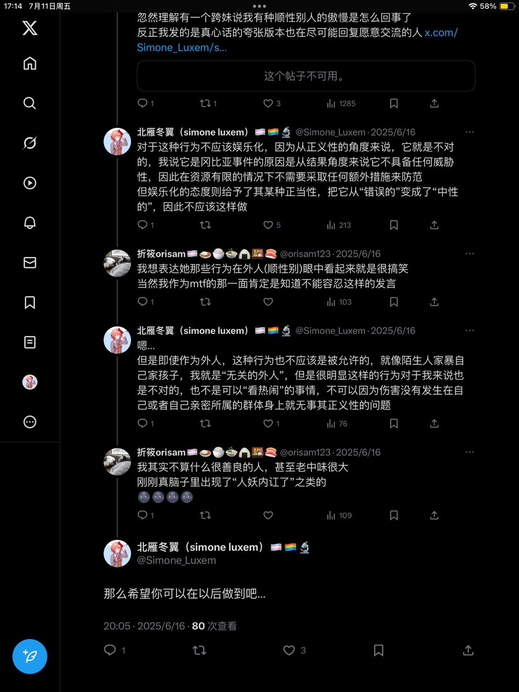
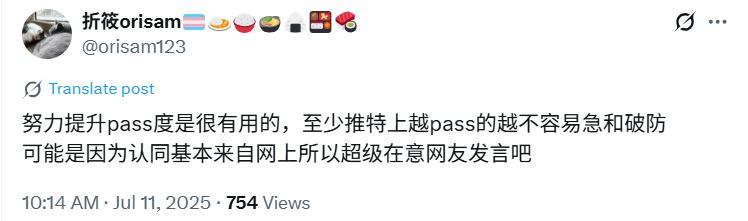
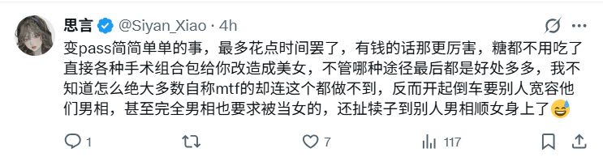
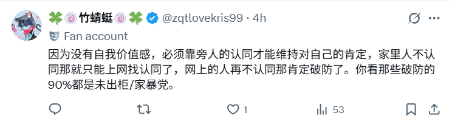

对于第一个人我尤其感觉生气，以及，一些痛心吧
自己曾经是把它当作可以沟通的，可以讲道理的，可以改过的同类来对待的，甚至可能相比于一些看一眼发言就b掉了的蠢货，算是给了格外多次机会的那种…
大概因为当时的自己感觉它具有某些不一样的地方值得更多口舌吧
现在看来，是和nagi一路的“乐子人”货色

自己曾经是把它当作可以沟通的，可以讲道理的，可以改过的同类来对待的，甚至可能相比于一些看一眼发言就b掉了的蠢货，算是给了格外多次机会的那种…
大概因为当时的自己感觉它具有某些不一样的地方值得更多口舌吧
现在看来，是和nagi一路的“乐子人”货色




传统秩序良善价值观三巨头合影的历史性时刻
“什么进步主义佐壬self-id太坏了，怎么能让那群小黑胖子上桌呢，不好看就别丢人现眼，不受欢迎多找找自己的原因，保守正道社会很公平的，不pass还想当女的？你们就是嫉妒我比你们强比你们美。我是来拨乱反正的你们要干什么？哦原来我也是y染啊” https://t.co/OvZlKYgVZX
“什么进步主义佐壬self-id太坏了，怎么能让那群小黑胖子上桌呢，不好看就别丢人现眼，不受欢迎多找找自己的原因，保守正道社会很公平的，不pass还想当女的？你们就是嫉妒我比你们强比你们美。我是来拨乱反正的你们要干什么？哦原来我也是y染啊” https://t.co/OvZlKYgVZX